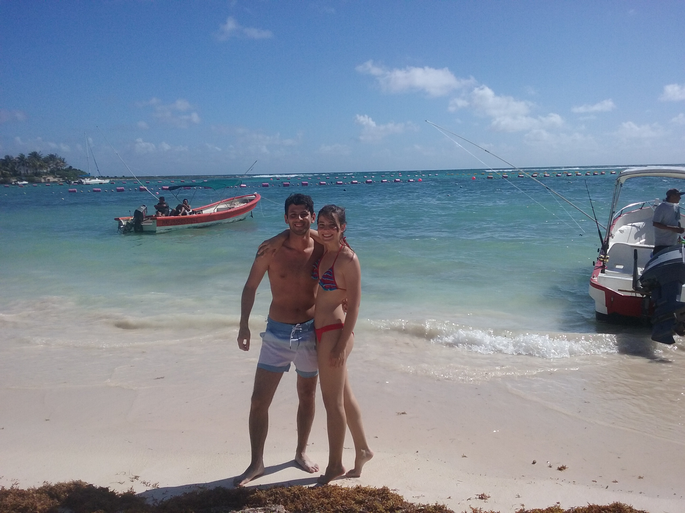
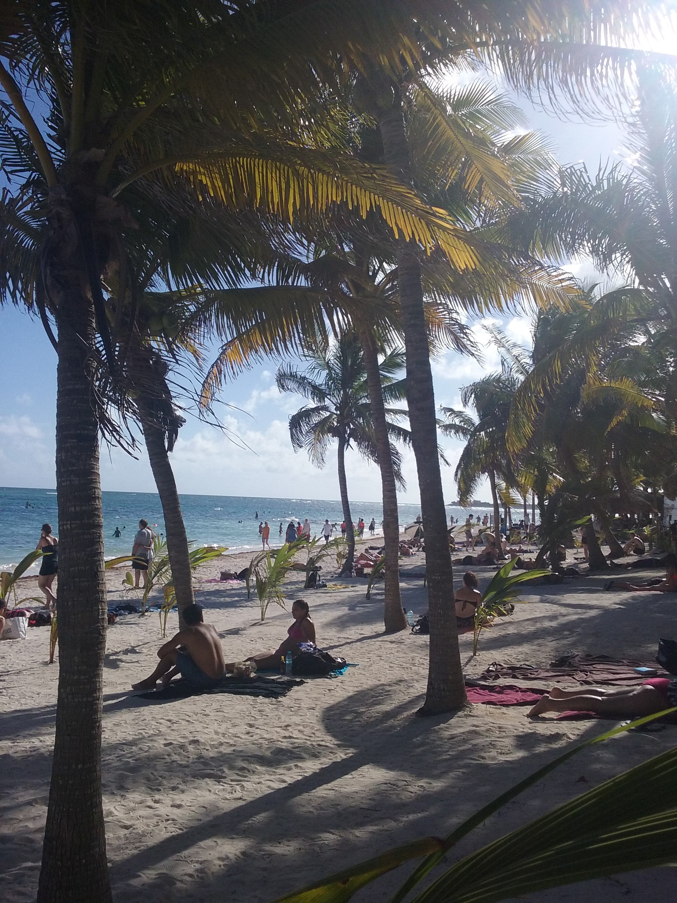
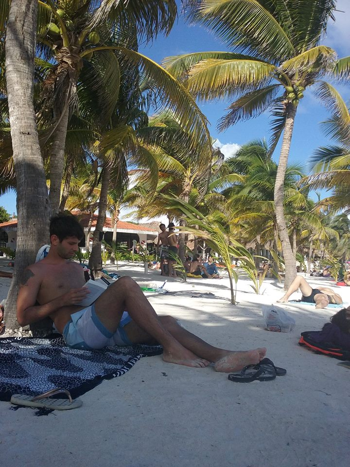

Por Gonzalo Volpe Gómez
De chico mis padres me llevaron al conocido "Mundo marino" ubicado en la costa argentina, un lugar donde por primera vez vi ballenas, delfines y distintos tipos de animales que hacían piruetas, saltos por el aire y todo tipo de maniobras sorprendentes. En ese momento tuve un sentimiento encontrado, disfrutaba mucho estar en contacto con animales tan admirables pero verlos encerrados me llenaba de tristeza. Akumal, cambió radicalmente mi perspectiva sobre el mundo marino.
Akumal Beach, Quintana Roo, México.
El día que empecé a investigar sobre Quintana Roo encontré muchísima información sobre Cancún, Tulum y Playa del Carmen, pero algo que suelo hacer al investigar un destino es intentar encontrar lugares menos conocidos que se diferencien de los destinos más turísticos. Si bien Akumal, es un lugar conocido en el ambiente bloggero, se encuentra fuera de los típicos circuitos de turismo. La primera vez que escuche de este lugar fue por Noe, una amiga queridísima que estuvo junto con su novio en la Riviera Maya y nos lo recomendó, a partir de ahí, decidí enfatizar la búsqueda en lo que prometía ser un paraíso.
No nos equivocamos, Akumal es un paraíso, pero no cualquier paraíso. Se destaca principalmente por su alto nivel de vida marina muy cerca de la costa, lo que permite que se pueda tener acceso muy fácilmente a un sinfín de especies acuáticas. Esto es debido al coral que atrae a los animales que buscan alimentos y que se encuentra a unos 500 metros aproximadamente de la costa.
Llegar es muy sencillo, desde Playa de Carmen, Cancún o Tulum podemos tomar las vans que paran en la ruta o que salen, por ejemplo, desde el centro de Playa del Carmen. Los tramos por persona suelen ser bastante económicos y desde Playa del Carmen demora unos 30 minutos hasta Akumal. El recorrido que hace la van es por una carretera cubierta de vegetación a ambos lados y nos deja en un puente. Al bajarnos, cruzamos el puente, y después de caminar unas cuadras llegaremos a la entrada de la playa. No se preocupen si en el trayecto no se ubican, o Google Maps no les funciona, el chófer hace ese recorrido todos los días y sabe perfectamente donde dejarlos, ustedes solamente deben indicar el nombre del lugar donde quieren bajar.
Luego del viaje corto y de la caminata, llegamos a la playa donde nos esperaba un sol radiante y un cielo despejado. Dejamos las mochilas rápidamente y nos fuimos a mojar las patitas al agua, desde allá, pudimos divisar algunos barquitos con turistas haciendo snorkel. En ese momento, se nos acercó un joven y nos ofreció hacer una excursión que iba hasta la zona del coral donde se podían ver tortugas, nosotros les explicamos que teníamos el equipo de snorkel y que no nos interesaba mucho ir con un barco lleno de gente. Esta respuesta surgió casi automática por recomendación de mi amiga Noe, que me había dicho que no alquilemos la excursión, sino que nos convenía adentrarnos al mar por nuestra cuenta ya que no hacia falta llegar a la zona de coral para ver animales. Lo cierto es que teníamos muchas ganas de hacerlo por nuestra cuenta, pero le habíamos mentido al joven que nos ofreció el tour, teníamos un solo equipo de snorkel y lo lindo de las vacaciones en pareja es vivir esos momentos únicos juntos, y yo desde ese entonces, ya sentía que sería un día mágico.
Akumal Beach, Quintana Roo, México.
Después de regatear un rato y de charlar con el joven hicimos el tour. Increíblemente, en la excursión nos encontrábamos solamente Mechi y yo, creo que se tomo muy enserio lo de que no queríamos ir con otra gente, y era sin barco. El chico nos brindó los equipos de snorkel y por un precio, que no recuerdo exactamente, pero que me había parecido algo extremadamente barato, estábamos ingresando a un mar que prometía muchísimo.
Apenas entramos al agua vimos los primeros peces y Akumal a cada momento prometía más y más. El guía iba adelante y nos llevaba de manera casi recta hacia el horizonte, mis ansias estaban hasta el cielo, no sabía con que nos podíamos encontrar. Luego de nadar unos cuantos metros llegamos al coral y tuvimos la sensación de estar en un documental de National Geographic o Animal Planet donde se sumergen en las profundidades y ven una cantidad de vida marítima indescriptible. Lo mismo sucedía ahí, el coral se encontraba muy cerca de la superficie y con solo bajar nuestros pies lo tocábamos, algo que era muy recriminado por el guía ya que afecta al ecosistema. Por eso, recomiendo que tengan mucho cuidado y respeten el lugar así lo podemos seguir disfrutando.
Paso un ratito más y la promesa de ver tortugas se cumplió, fue un primer encuentro muy cercano donde pudimos apreciar en su totalidad el color, la forma, los ojos, absolutamente todo de la tortuga. Seguido a ello, vimos unas cuantas más, y el guía nos explicó que nunca debíamos tocar las tortugas porque se estresan al contacto con humanos y que eso les acorta la vida. Además, nos contó que el gobierno cuida de las tortugas que van a la costa de Akumal a poner sus huevos y que eso ayuda muchísimo a una especie tan hermosa que esta en extinción.
El recorrido por el agua continuó y junto con Mechi estábamos muy felices, pero yo sentía que algo faltaba, existía un animal que aún no había visto y que solo describían algunos pocos foros de todos los que había leído de Akumal. Un animal que puede ser letal y que suele moverse por el fondo marino: la raya. Fue así, que con ese sentimiento, me encontré delante mío con otra tortuga y mientras la contemplaba sentí un golpeteo fuerte en mi hombro, era Mechi, que me estaba llamando rápidamente, al darme vuelta y captar la seña que ella me hacia, pude ver una raya, hermosa con su piel gelatinosa y su andar pegado al fondo marino. En ese momento me congele, tuve miedo, sentí que estaba en un hábitat que no era naturalmente la mía y frente a un animal considerado peligroso, me sentí que no era nada y que el mar era todo. Esa mezcla de sentimientos fue hermosa, me hizo darme cuenta de lo chiquito que somos y de lo increíble de la vida animal.
Luego de la increíble visita al coral, salimos del agua, y nos propusimos descansar en la playa. El mar y tantas emociones nos tenían cansadísimos. Lo bueno de Akumal, es que se puede disfrutar de todo un día, entrando y saliendo del mar y es algo increíble hay un mundo fuera y otro dentro del agua. Para almorzar, nos dirigimos al OXXO que queda en la entrada de Akumal, es un mercadito pequeño que tiene buenos precios y se encuentra en varios sectores de Quintana Roo. Muy recomendable para comprar comida para cocinar o para comer rápidamente en la playa. Ese día comimos unos sanguchitos con cervezas bajo el sol incesante.
Relax en Akumal Beach, Quintana Roo, México.
Al terminar el almuerzo y el relax, teníamos ganas nuevamente de adentrarnos en el mar pero no teníamos dos equipos de snorkel, por lo que decidimos acercarnos a la empresita de la que era el joven que nos llevó al tour y les dijimos que queríamos alquilar dos snorkel. El chico me miró, miró los equipos de snorkel y nos dijo llévenlos, cuando terminen los traen. Así fue que nos quedamos toda la tarde con los snorkel gratis nadando y nadando. Una recomendación, es que consigan una cámara apta para filmar o tomar fotos debajo del agua, nosotros no la teníamos y nos arrepentimos mucho de eso.
Akumal es el verdadero mundo marino, un lugar totalmente natural, con animales sueltos y sin hacer piruetas, sin sometimiento del humano y donde es importantísimo respetar todo lo que nos dicen los guías y la gente que cuida el lugar. Si somos capaces de visitar el lugar con conciencia, seguramente disfruten, como lo hice yo, de la maravilla natural que representan las tortugas, los peces y las rayas.